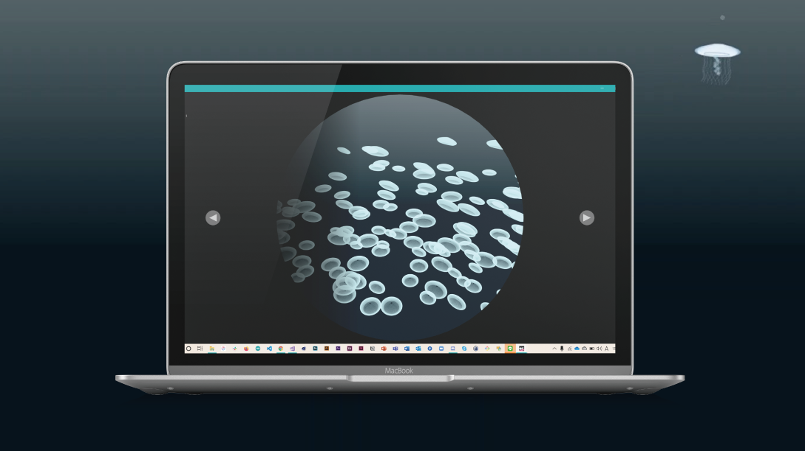
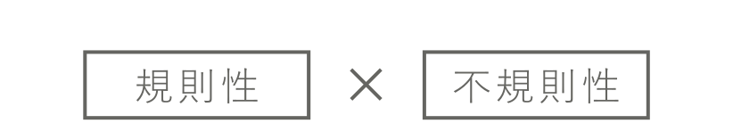
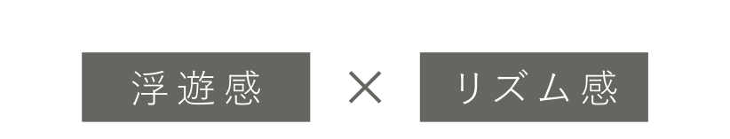

WORKS
漂うクラゲのプログラミング

- genre
- style
- tool
- season
プログラミング
課題制作
OpenFrameworks
2019.12.01～2019.01.09
作品概要
ゆらぎに触れる
OpenFrameworksを用いて、漂うくらげの動きを表現した作品です。
インタラクティブなクラゲの水槽を３つ制作しました。マウスの操作で、ライトアップの色を変えたりクラゲをわさわさと動かしたりすることができます。クラゲの動きの表現にはランダム係数を用いて、浮遊感と生物感を演出できるようにこだわって制作しました。
Programming
01
About
作品について
ゆらぎに触れる

適度な規則性と不規則性を持ち合わせたゆらぎには、癒しを感じるヒーリング効果があります。本作品は、クラゲの動きを表現したインタラクティブアニメーションです。ユーザーとの相互作用の機能を加えることで、「ゆらぎ」に触れ、体験してもらえる作品を思案しました。

カサの動きや足の動き、位置座標の変化によって、クラゲ独特の浮遊感やリズム感の表現を目指しました。プログラムでは、ランダム係数を用いて描画しています。
02
Animation
アニメーションの制作
【アマクサクラゲ】
【ミズクラゲ】
【ウリクラゲ】
03
MouseStalker
マウスストーカーの制作
マウスに追従するクラゲ
授業で制作したアニメーションを基に、自主制作として、マウスに追従するクラゲを制作しました。マウスカーソルに少し遅れてクラゲがついてきます。